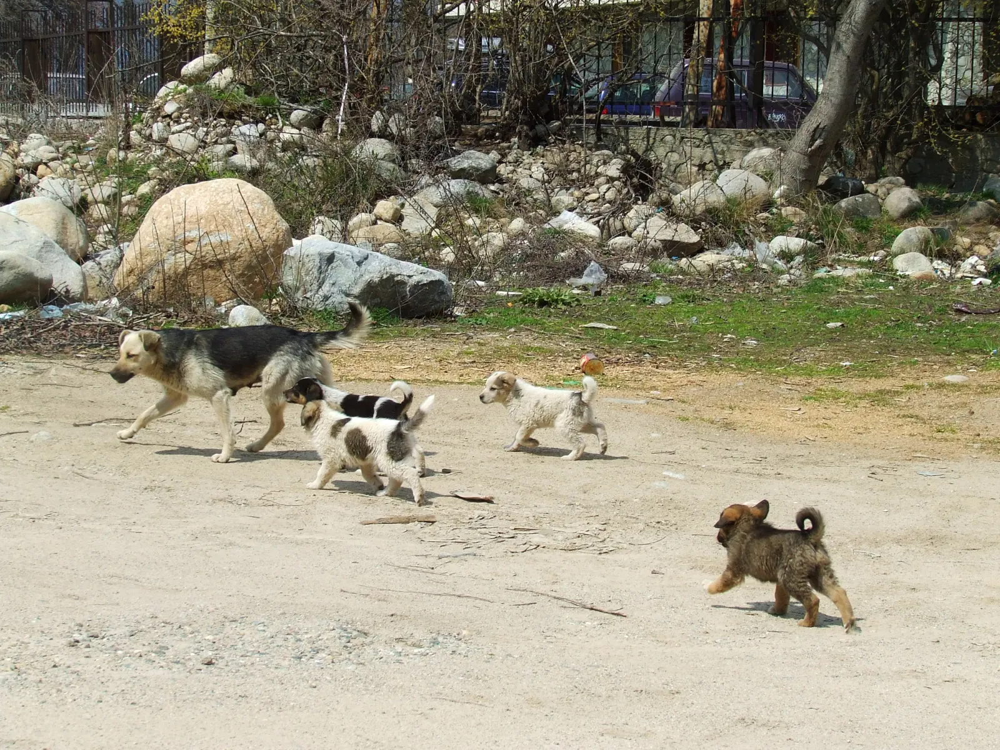
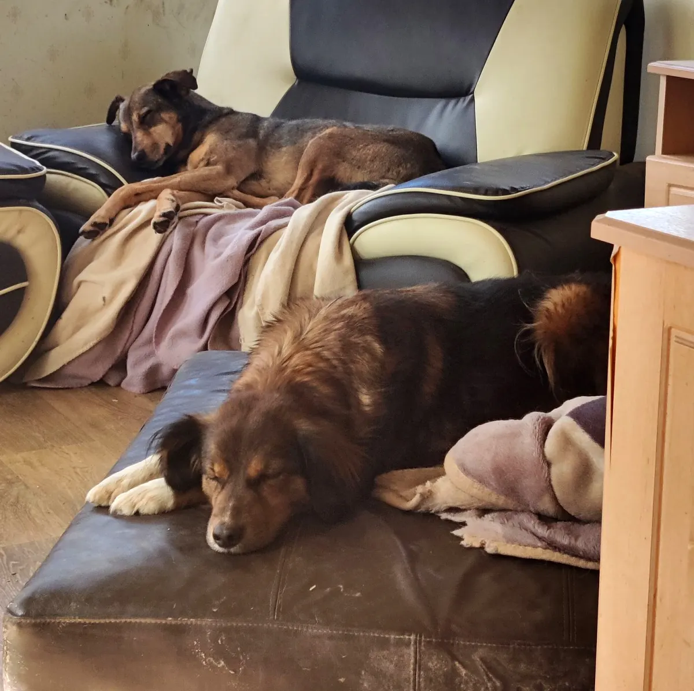
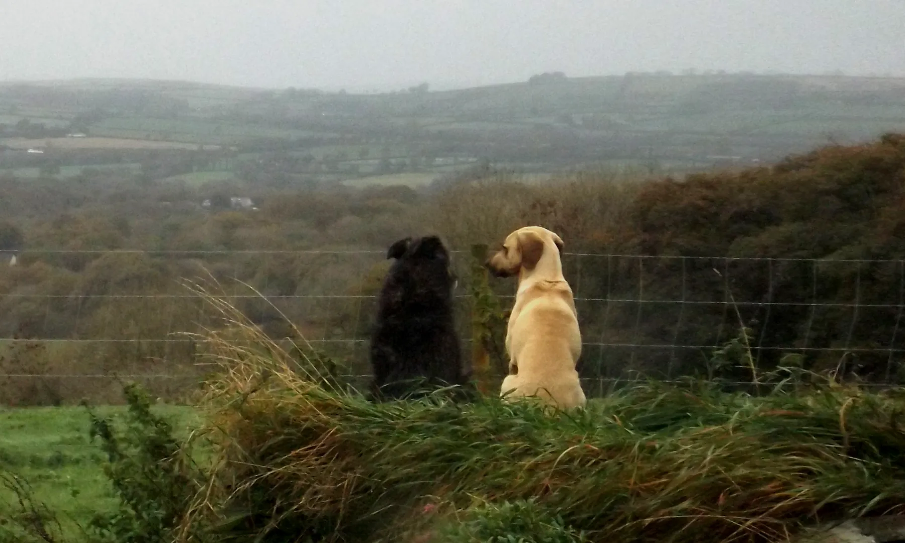
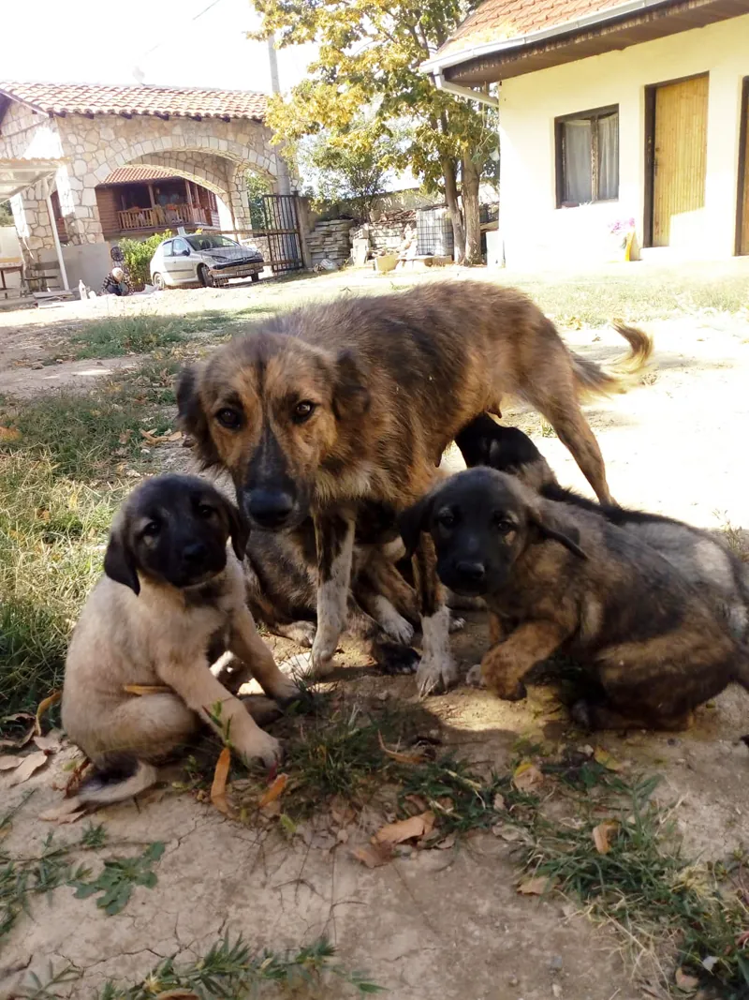
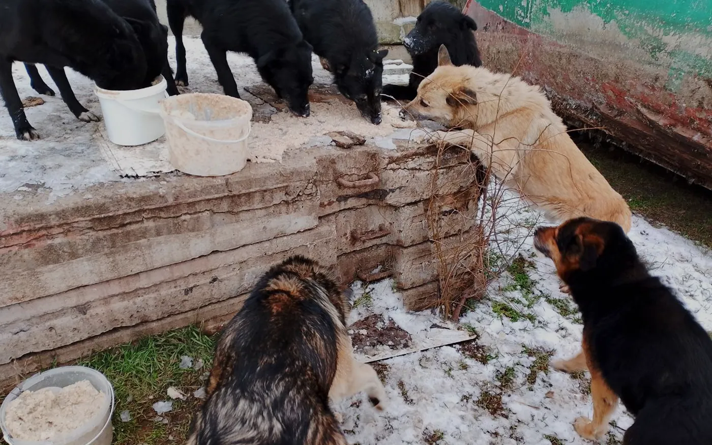
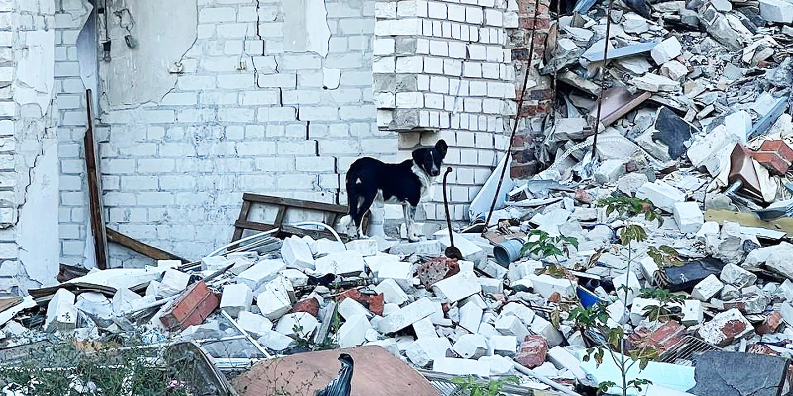
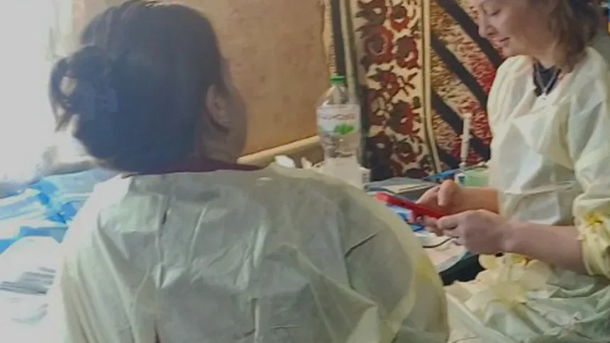
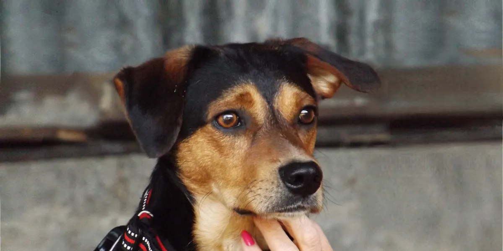

Dispatch 001Ukraine & Eastern EuropeAn independent project by Origin LabsK9 Rescue: charitable beneficiary
Saving dogs,one blockat a time.
Solana blocks since you arrived
0
Stray dogs killed worldwide, same time
0
Solana makes a block every 0.4 seconds. Somewhere, a stray dog is killed every 1.6. A share of the creator rewards from every trade of this independent coin, created and operated by Origin Labs, goes straight to K9 Rescue's own wallet. Let's make the blocks count.
Twenty million stray dogs are killed every year. Fifty million live on the streets of Central and Eastern Europe alone, poisoned, beaten, frozen and starved, seen as vermin with little or no protection. K9 Rescue is a small, volunteer-led British charity that pays no salaries and goes where it's worst. This independent coin was created to raise funds for that work. The dispatches below retell it from K9 Rescue's own published reports.
Figures: K9 Rescue, k9-rescue.org
Chapter I
The road east.
Twenty years, five countries, one idea: go to the dogs nobody else will reach.
Keep scrolling →
2005

Bulgaria · 42.70°N 23.32°E
It starts on a street corner.
In Bulgaria, the people who would go on to found K9 Rescue can't look away. They feed the street dogs, treat them, spay them, and for eight years rescue the sick and injured and find them homes.
2013

United Kingdom
A charity, not a hobby.
Back in the UK, K9 Rescue becomes a registered charity. In 2017 it becomes the first animal charity in the UK to accept Bitcoin directly.
2018

West Wales · 52.0°N 4.5°W
No kennels. No kill.
A farm sanctuary where traumatised street dogs decompress at their own pace. For some, a tossed treat feels like a missile. It can take years before they accept a touch.
Winter

Photo: Mirjana Mishevska
North Macedonia · 41.99°N 21.43°E
A meal a day for a stray.
Street feeding stations that keep dogs and cats alive through winter, and plans for the Freedom Shelter: cage-free, with its own vet care, in a country where real shelters barely exist.
2022

Photo: Inessa Safonenko
Odesa · Kharkiv, Ukraine
Then the war came.
Food, medicine and vet supplies bought in Kyiv and Odesa, animals evacuated from the conflict zone, feeding programmes in frontline cities. “We gave away our very last bag of dry food and cooked about 70 litres of porridge.”
2025

Photo: Affordable Sterilization
Kramatorsk · 48.72°N 37.56°E
Ten miles from the fighting.
With state spay schemes suspended by the war, dogs breed unchecked. K9 Rescue decides to go to the front.
Log 01Sep 2025Pilot

Photo: Affordable Sterilization
“Could it be done?”
Vets are scarce. Families can't afford sterilisation. Thousands of dogs roam the streets and no large campaign has ever reached the city. K9 Rescue funds a pilot with the veterinary team Affordable Sterilization and local volunteers.
Result: 115 female dogs spayed. It works.
Log 02Jan 2026Air raid alert

Photo: Affordable Sterilization
Snow underfoot. Sirens overhead.
Five days of freezing cold, wailing air raid sirens and the ever-closing threat of drones. Yard dogs, the main source of unwanted litters, and strays too frightened to handle, sedated with humane darts.
Dust from look-alike addresses (a common spam trick) is filtered out: nothing under 0.01 SOL or 1 USDC is counted.
Chapter V
Send a supply drop.
You don't need to trade to help. Fill in the label and your own wallet sends SOL or USDC straight to K9 Rescue, the same address it publishes on k9-rescue.org. No middleman, no platform fee, and it shows up in the ledger within a minute or two.
£8 buys a 10kg bag of feed. On the front line, volunteers cook it into porridge to feed thirty dogs at a time.
No. This is an independent project created and operated by Origin Labs, which is responsible for it, including its operation and marketing. K9 Rescue has not issued, approved or endorsed the coin and takes no part in running or promoting it. It is named only as a charitable beneficiary: its share of creator rewards is paid to the Solana wallet K9 Rescue publishes on k9-rescue.org for memecoin donations.
Where exactly does the money go?
K9 Rescue's share of creator rewards goes straight to the Solana wallet K9 Rescue lists on its crypto donations page for memecoin projects. It never passes through anyone else, and every payment is public on the blockchain.
What does it pay for?
Food for strays in frontline Ukraine and North Macedonia, large-scale spay missions, vet aid for grassroots shelters and the rehab sanctuary in West Wales. K9 Rescue pays no salaries.
How can I check it myself?
Read the ledger above, or open K9 Rescue's wallet on Solscan and see every transaction yourself.
Do I have to buy the coin to help?
No. Send a supply drop in SOL or USDC, or give by card on k9-rescue.org. The coin simply lets the crypto community keep giving with every trade.
Can I get a receipt?
Wallet gifts are anonymous by design, and every one shows up in the ledger above. If you need a receipt, K9 Rescue's crypto donations page explains the options.